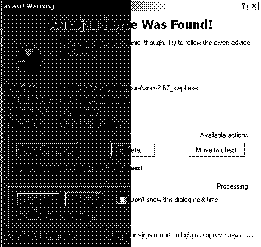

Todo inició el 4 de mayo de 2000 cuando decenas de computadoras recibieron un correo electrónico con la leyenda ‘I Love You’ y el cual portaba un archivo adjunto con el nombre: ‘LOVE-LETTER-FOR-YOU.TXT.vbs’.
Al momento de abrirse, el documento infectaba de inmediato la computadora y se direccionaba automáticamente a los correos que el usuario tenía en el equipo.
La propagación del virus se inició en Filipinas y pronto llegó a Estados Unidos, Asia, Europa y América Latina.

Todo inició el 4 de mayo de 2000 cuando decenas de computadoras recibieron un correo electrónico con la leyenda ‘I Love You’ y el cual portaba un archivo adjunto con el nombre: ‘LOVE-LETTER-FOR-YOU.TXT.vbs’.
Al momento de abrirse, el documento infectaba de inmediato la computadora y se direccionaba automáticamente a los correos que el usuario tenía en el equipo.
La propagación del virus se inició en Filipinas y pronto llegó a Estados Unidos, Asia, Europa y América Latina.
En apenas cinco días, los expertos en seguridad cibernética ya habían identificado 18 mutaciones del virus que, dicen algunos, apeló a la necesidad de los usuarios por un poco de amor.
Para mediados de mayo, cerca de 50 millones de computadoras en todo el mundo ya habían sido infectadas con ‘I love you’, es decir, el 10% de las computadoras conectadas a Internet en ese año.
Los daños provocados por el virus rebasaron los 10 millones de euros. Entre las víctimas del famoso virus se encontraron el Parlamento Británico, el Pentágono y la Reserva Federal de Estados Unidos.